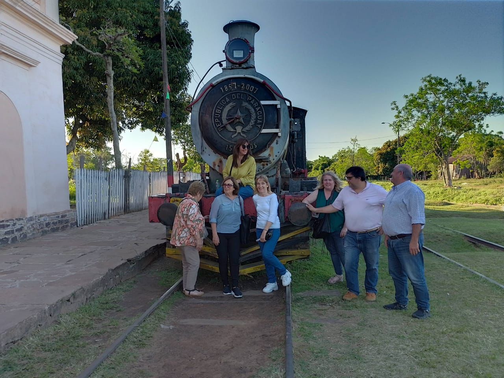
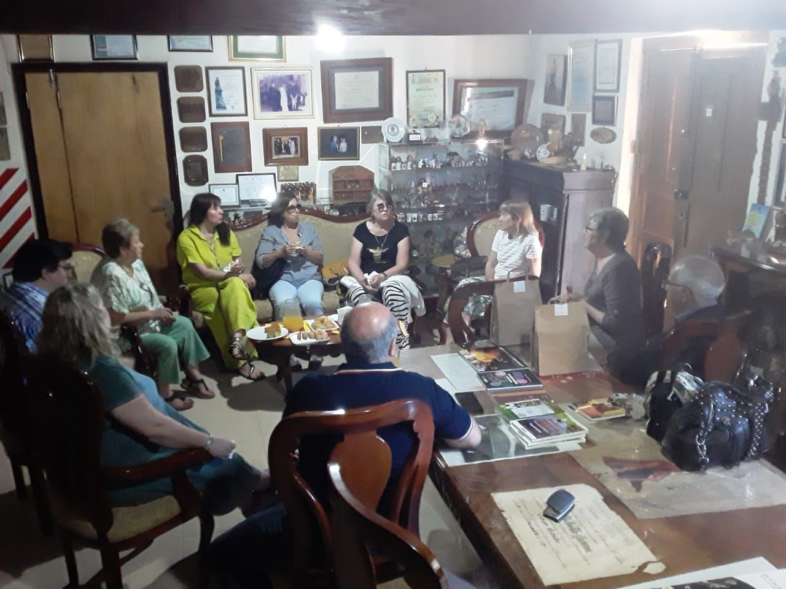
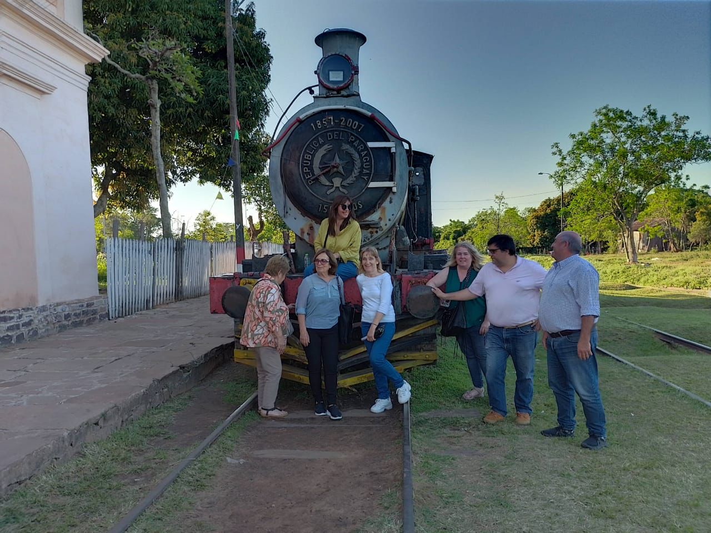
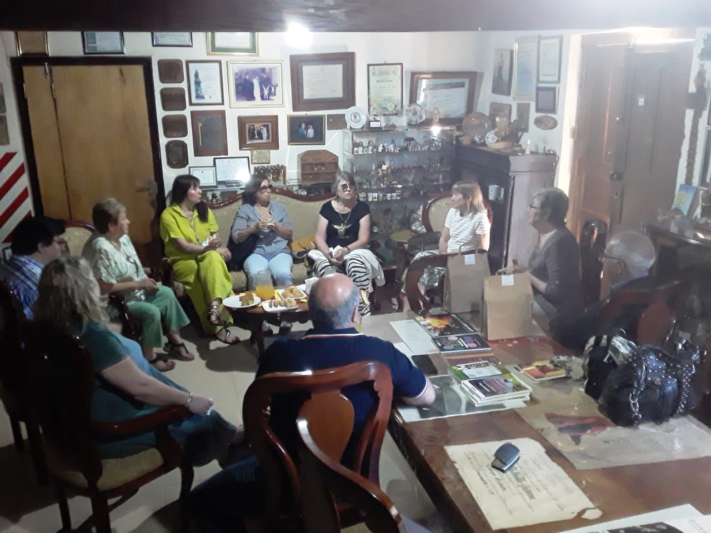

Visita a Paraguay
El proyecto Fierro y Quijote tiene como objetivos fundamentales hacer conocer Azul, Ciudad Cervantina a nivel e escuelas primarias y establecer vínculos entre ciudades, provincias y países.
En la vinculación con Paraguay se estableció un proyecto en dos etapas. Este año concretamos la primera, con un viaje al vecino país; y la segunda culminará, a finales del año próximo cuando niños, niñas y docents de escuelas primarias del Departamento de Paraguari (Paraguay) vengan a Azul para conocer la ciudad cervantina e iniciar un diálogo intercultural de la mano del Quijote. Pero este acercamiento a Paraguyt tiene una historia.
En el mes de abril, el equipo de trabajo integrado por Alicia Laria, Inés Maceira, Milagros Guzmán y Margarita Ferrer, junto al presidente de la Asociación Española, Gonzalo Berríos, toman un primer contacto con el Ministro Gustavo Miranda, de la Embajada de Paraguay en Argentina. En esa oportunidad, visita el teatro y se conversa sucintamente acerca de los proyectos educativos llevados a cabo por la institución, con especial interés en el proyecto “Fierro y Quijote, hermanando culturas”, ya que se ve la posibilidad de que alumnos de Paraguay puedan viajar a Azul y ser recibidos por una escuela anfitriona, en un encuentro en el Seminario Diocesano de nuestra ciudad.
 



En una Segunda visita del Señor Ministro Gustavo Miranda, y a través de una videoconferencia, tomamos contacto directo con quienes serán los referentes del proyecto en Paraguay, (Departamento de Paraguarí), escritoras, docentes y artistas vinculados a Educación y Cultura de ese Departamento: Dra, Margarita Miró, Lic. María Olga Vysokolan, el Lic. Walter Fernando Díaz Ayala y la profesora y traductora Lilian para establecer primeros contactos con tres ciudades paraguayas de ese Departamento: Yaguarón, Paraguarí y Carapeguá.
Durante tres meses estuvimos de conversaciones e intercambios virtuales ajustando las propuestas de trabajo. Finalmente el Proyecto paraguayo que articulará con el nuestro será “Quijote recorriendo el departamento de la libertad: Paraguarí”,y fue declarado de Interés Educativo y Cultural por las Juntas Municipales de Paraguarí, Carapeguá y Yaguarón respectivamente.
El 7 de octubre, los responsables del Proyecto salimos hacia Paraguarí . Nos esperaba una agenda importante de visitas, entrevista con autoridades municipales y educativas, encuentros con docentes y alumnos de tres escuelas primarias que estarán involucradas en el Proyecto. Incluído un minitour para recorrer lugares emblemáticos de cada lugar, como así también visitas guiadas al Museo Nacional Dr. José Gaspar Rodríguez de Francia, y al Templo San Buenaventura, obra Franciscana, estilo “Barroco colonial paraguayo” en Yaguarón.
En Asunción nos reunimos con el Dr. Aquino, reunión programada desde Argentina por el Ministro Miranda, y visitamos el Museo de los Bronces y el Museo del Barro.
Un viaje muy provechoso en cuanto a diálogos, encuentros, acuerdos y objetivos logrados de ambas partes. La organización de las actividades en el país hermano cumplió ampliamente las expectativas, Intercambiamos libros, documentos y presentes personales.
Seguiremos trabajando para que, el año próximo, niñas, niños y docentes del Departamento de Paraguari puedan venir a cumplir la Segunda parte del Proyecto en el 2024.